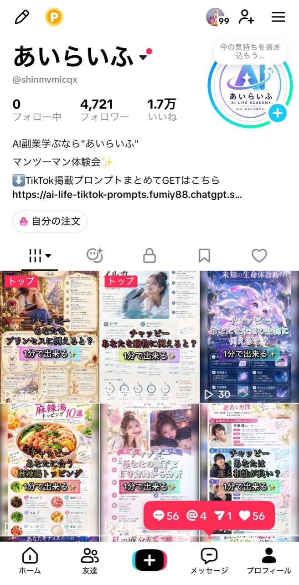
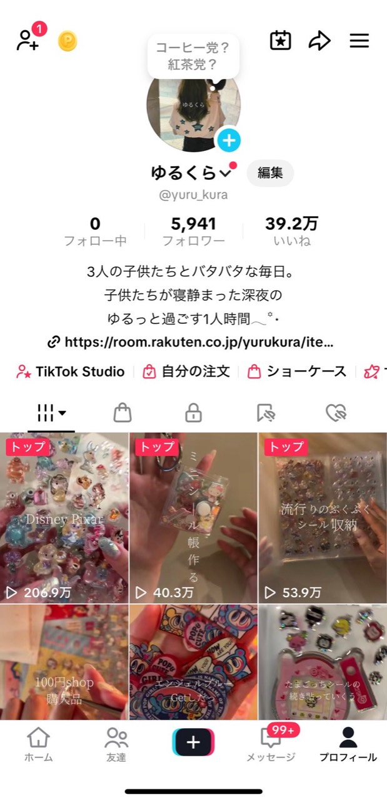

REAL TIKTOK STORIES
伸び方は、ひとつじゃない。
認知、集客、収益化。目的が違っても、自分に合う“伸ばす順番”は見つけられる。
- スマホ1台
- 初心者OK
- 目的別設計
- 実演サポート


2,000万+総再生
月100万円収益実例
売上50万UP店舗実例
7異なる活用事例
2,000万+総再生の実例
1か月収益化の実例
スマホ中心の運用
SWIPE THE RESULTS
あなたの目的に近い
伸び方を見つける。
実績はゆっくり自動で流れます。指で自由にスワイプでき、カードをタップすると詳しい分析が見られます。
認知拡大店舗売上収益化クリエイターエンタメ
※掲載数値・内容は、運営者および各実績者から共有された情報と提供画像をもとに掲載しています。成果には個人差があり、同様の成果を保証するものではありません。
YOUR ROADMAP
真似するのは、
結果ではなく“順番”。
目的、現在地、使える時間によって、最初にやるべきことは変わります。
- 01目的を決める認知・集客・収益化
- 02伸びる型を探す企画・尺・見せ方を分析
- 03スマホで作る撮影・編集・投稿
- 04数字で改善する次の一本へつなげる
参加無料・オンライン
FREE TIKTOK ROADMAP SESSION
パソコン不要。スマホ1台で。あなた専用の攻略ロードマップを。
今のアカウント・目的・悩みを整理し、何から始めるかを一緒に決めます。
約40分初心者OK実用プロンプト1000個
無料で日程を選ぶ →無理な勧誘は行いません。空いている日時を選ぶだけです。